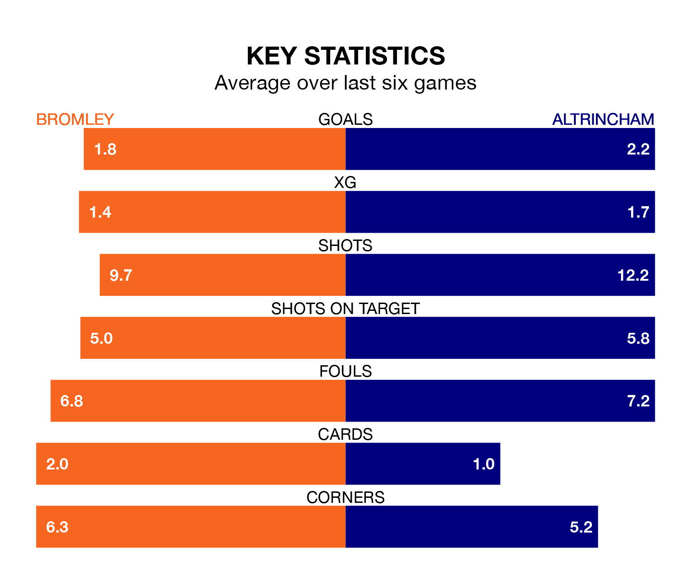

Two of National League's top sides face each other at Hayes Lane in Saturday's late kick-off, when second-placed Bromley host fourth-placed Altrincham.
Bromley have picked up 14 wins and six draws from 24 games so far this season, and sit 10 points above the visitors going into the 5.30pm match.
Robins, meanwhile, have won 10 and drawn eight of 22, picking up 38 points.
With 42 goals in 22 games so far this season, Altrincham are scoring more than average in the league with 1.9 goals per game. And they are conceding fewer than average, letting in 30 goals at a rate of 1.4 per game.
Bromley are also above average scorers, with 1.6 goals per game, compared to a league average of 1.5. They have conceded 1.0 goal per game.
With Grant Ashley Smith between the sticks, the Ravens can rely on one of the league's safest pair of hands. He has kept seven clean sheets in his 23 appearances this season, and only one other 'keeper – Halifax Town's Samuel William Johnson – has been able to prevent the opposition scoring on more occasions in National League.
In Robins' net, Ethan Walker Ross has four clean sheets in 22 games. He has conceded a goal every 73 minutes, 40% more often than the 99 minutes between goals for Smith.
The hosts are in good form in National League, with four wins and a draw from their last six games.
With three wins and a draw over that period, the away side's form is worse – they have taken 10 points from 18, compared to Bromley's 13.
In the last five years, Bromley and Altrincham have played each other on seven occasions. Bromley won five of them and they drew twice.
On average, the Ravens scored 1.4 goals and Robins 0.6 in those matches.
Their last meeting was on September 2, when Bromley won 2-1 away.
Bromley's last match was on December 16, a 2-1 win against Southend United, with Corey Milton Whitely and Michael Cheek getting the goals for the Ravens.
Altrincham beat Fylde 2-1 last time out, also on December 16, with Christopher Conn on the scoresheet.
Updated: 12:43, 20/12/23